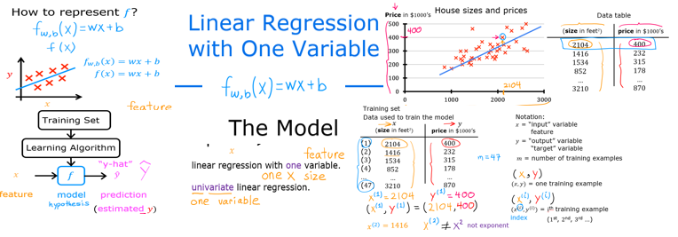

Optional Lab: Model Representation

Goals
In this lab you will: - Learn to implement the model \(f_{w,b}\) for linear regression with one variable
Notation
Here is a summary of some of the notation you will encounter.
x_train |y_train | \(x^{(i)}\), \(y^{(i)}\) | \(i_{th}\)Training Example | x_i, y_i| | m | Number of training examples | m| | \(w\) | parameter: weight, | w | | \(b\) | parameter: bias | b |f_wb |Tools
In this lab you will make use of: - NumPy, a popular library for scientific computing - Matplotlib, a popular library for plotting data
[1]:
import numpy as np
import matplotlib.pyplot as plt
plt.style.use('./deeplearning.mplstyle')
Problem Statement

Size (1000 sqft) |
Price (1000s of dollars) |
|---|---|
1.0 |
300 |
2.0 |
500 |
You would like to fit a linear regression model (shown above as the blue straight line) through these two points, so you can then predict price for other houses - say, a house with 1200 sqft.
Please run the following code cell to create your x_train and y_train variables. The data is stored in one-dimensional NumPy arrays.
[2]:
# x_train is the input variable (size in 1000 square feet)
# y_train is the target (price in 1000s of dollars)
x_train = np.array([1.0, 2.0])
y_train = np.array([300.0, 500.0])
print(f"x_train = {x_train}")
print(f"y_train = {y_train}")
x_train = [1. 2.]
y_train = [300. 500.]
Note: The course will frequently utilize the python ‘f-string’ output formatting described here when printing. The content between the curly braces is evaluated when producing the output.
You will use m to denote the number of training examples. Numpy arrays have a .shape parameter. x_train.shape returns a python tuple with an entry for each dimension. x_train.shape[0] is the length of the array and number of examples as shown below.
[3]:
# m is the number of training examples
print(f"x_train.shape: {x_train.shape}")
m = x_train.shape[0]
print(f"Number of training examples is: {m}")
x_train.shape: (2,)
Number of training examples is: 2
One can also use the Python len() function as shown below.
[4]:
# m is the number of training examples
m = len(x_train)
print(f"Number of training examples is: {m}")
Number of training examples is: 2
You will use (x\(^{(i)}\), y\(^{(i)}\)) to denote the \(i^{th}\) training example. Since Python is zero indexed, (x\(^{(0)}\), y\(^{(0)}\)) is (1.0, 300.0) and (x\(^{(1)}\), y\(^{(1)}\)) is (2.0, 500.0).
To access a value in a Numpy array, one indexes the array with the desired offset. For example the syntax to access location zero of x_train is x_train[0]. Run the next code block below to get the \(i^{th}\) training example.
[5]:
i = 0 # Change this to 1 to see (x^1, y^1)
x_i = x_train[i]
y_i = y_train[i]
print(f"(x^({i}), y^({i})) = ({x_i}, {y_i})")
(x^(0), y^(0)) = (1.0, 300.0)
You can plot these two points using the scatter() function in the matplotlib library, as shown in the cell below. - The function arguments marker and c show the points as red crosses (the default is blue dots).
You can use other functions in the matplotlib library to set the title and labels to display
[6]:
# Plot the data points
plt.scatter(x_train, y_train, marker='x', c='r')
# Set the title
plt.title("Housing Prices")
# Set the y-axis label
plt.ylabel('Price (in 1000s of dollars)')
# Set the x-axis label
plt.xlabel('Size (1000 sqft)')
plt.show()
Model function
 As described in lecture, the model function for linear regression (which is a function that maps from
As described in lecture, the model function for linear regression (which is a function that maps from x to y) is represented as
The formula above is how you can represent straight lines - different values of \(w\) and \(b\) give you different straight lines on the plot.
Let’s try to get a better intuition for this through the code blocks below. Let’s start with \(w = 100\) and \(b = 100\).
Note: You can come back to this cell to adjust the model’s w and b parameters
[7]:
w = 100
b = 100
print(f"w: {w}")
print(f"b: {b}")
w: 100
b: 100
Now, let’s compute the value of \(f_{w,b}(x^{(i)})\) for your two data points. You can explicitly write this out for each data point as -
for \(x^{(0)}\), f_wb = w * x[0] + b
for \(x^{(1)}\), f_wb = w * x[1] + b
for loop as shown in the compute_model_output function below. > Note: The argument description (ndarray (m,)) describes a Numpy n-dimensional array of shape (m,). (scalar) describes an argument without dimensions, just a magnitude.np.zero(n) will return a one-dimensional numpy array with \(n\) entries[8]:
def compute_model_output(x, w, b):
"""
Computes the prediction of a linear model
Args:
x (ndarray (m,)): Data, m examples
w,b (scalar) : model parameters
Returns
y (ndarray (m,)): target values
"""
m = x.shape[0]
f_wb = np.zeros(m)
for i in range(m):
f_wb[i] = w * x[i] + b
return f_wb
Now let’s call the compute_model_output function and plot the output..
[9]:
tmp_f_wb = compute_model_output(x_train, w, b,)
# Plot our model prediction
plt.plot(x_train, tmp_f_wb, c='b',label='Our Prediction')
# Plot the data points
plt.scatter(x_train, y_train, marker='x', c='r',label='Actual Values')
# Set the title
plt.title("Housing Prices")
# Set the y-axis label
plt.ylabel('Price (in 1000s of dollars)')
# Set the x-axis label
plt.xlabel('Size (1000 sqft)')
plt.legend()
plt.show()
As you can see, setting \(w = 100\) and \(b = 100\) does not result in a line that fits our data.
Challenge
Try experimenting with different values of \(w\) and \(b\). What should the values be for a line that fits our data?
Tip:
You can use your mouse to click on the triangle to the left of the green “Hints” below to reveal some hints for choosing b and w.
<font size=’3’, color=’darkgreen’>Hints
Try \(w = 200\) and \(b = 100\)
Prediction
Now that we have a model, we can use it to make our original prediction. Let’s predict the price of a house with 1200 sqft. Since the units of \(x\) are in 1000’s of sqft, \(x\) is 1.2.
[10]:
w = 200
b = 100
x_i = 1.2
cost_1200sqft = w * x_i + b
print(f"${cost_1200sqft:.0f} thousand dollars")
$340 thousand dollars
Congratulations!
In this lab you have learned: - Linear regression builds a model which establishes a relationship between features and targets - In the example above, the feature was house size and the target was house price - for simple linear regression, the model has two parameters \(w\) and \(b\) whose values are ‘fit’ using training data. - once a model’s parameters have been determined, the model can be used to make predictions on novel data.
[ ]: